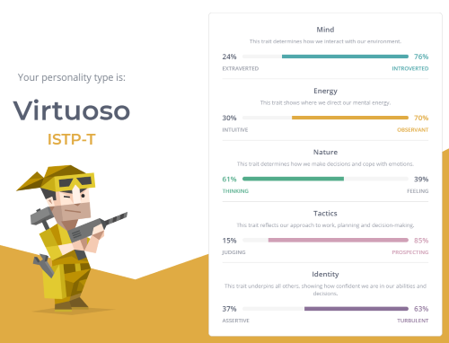
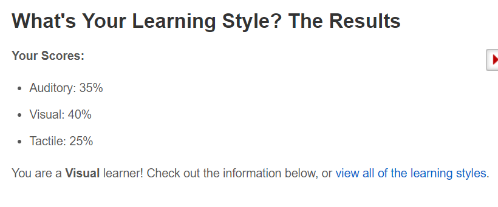
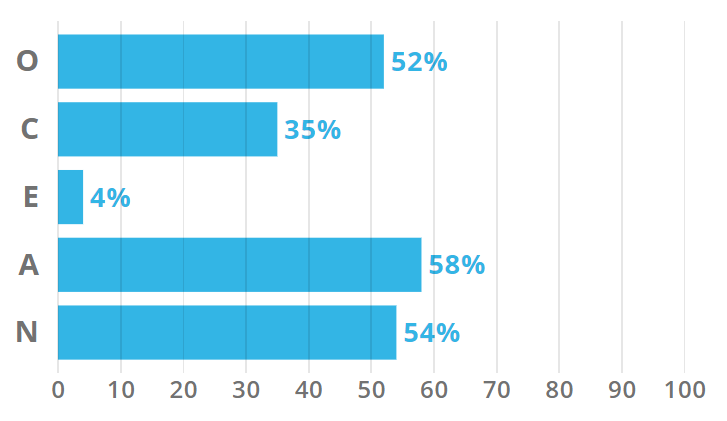

Personal Profile
Myers-Brigg
These results indicate to me that while I am less inclined to be a leader within a group environment, I am compelled by practicality and pragmatism which drives to complete my tasks regardless whether I am in an situation I am not comfortable in. This suggests that a group composition that includes me would require a more extroverted, leader type to provide direction.
Learning Style
I already knew this, but the test confirmed I am a visual learner. I am better able to learn through written notes that I can refer to over memory. I prefer visual references rather than audio ie; Powerpoint slides. I am more receptive to written messages instead of words as something written is concrete and can always be referred to.
Big Five
This test showed to me that I am more impulse driven and usually work in the moment and in bursts of motivation. Much like the Myers-Brigg, I am introverted and prefer to stay out of attention. My score in agreeableness suggests that despite my introversion, I am capable of working effectively with others as I am more open and empathic.